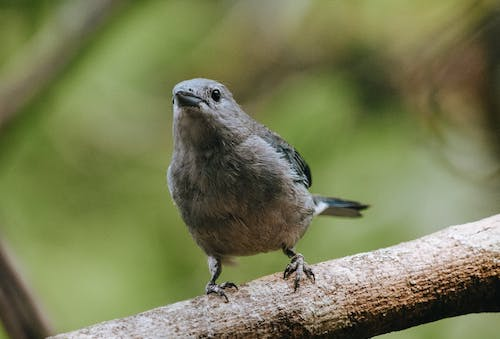
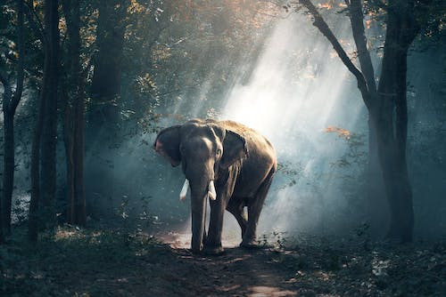
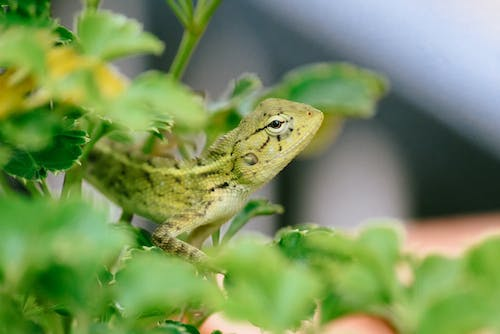
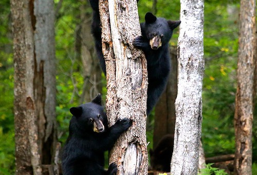
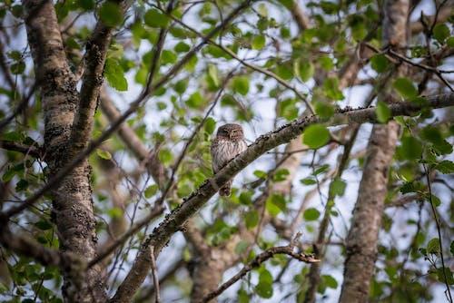
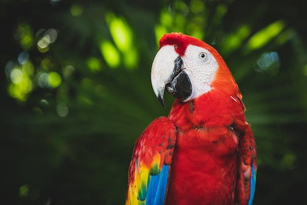
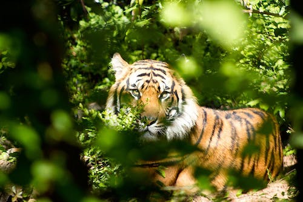
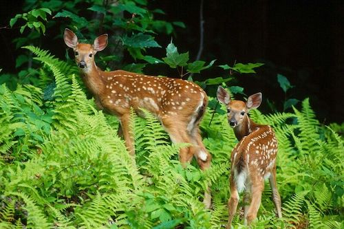
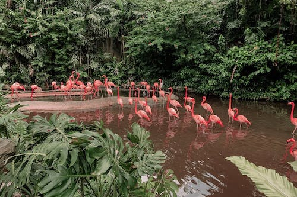
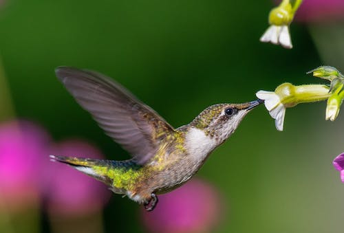

| Animal's natural habitat |
|  |
Explore nature's surroundingsEither you are driving through the perimeter of the park's rainforest or just enjoying a guided tour hike and drive by the park's natural surroundings, you may encounter a motley of fauna that will not stop to amaze you, hence becoming attached and thankful of the park's natural resources. A visit will surely change your outlook on how important is for people to preserve this valuable ecosystem in order for future generations to enjoy. |
|  |
Indian ElephantThe Indian elephant is one of three extant recognized subspecies of the Asian elephant and native to mainland Asia.Since 1986, the Asian elephant has been listed as endangered as the wild population has declined by at least 50% since the 1940s. The Asian elephant is threatened by habitat loss, degradation and fragmentation. Thanks to the park's personnel monitoring efforts it can be spotted throughout the park's grounds. Reference |
|  |
LizardsLizards are a widespread group of squamate reptiles, with over 6,000 species, ranging across all continents except Antarctica, as well as most oceanic island chains. The group is paraphyletic as it excludes the snakes and Amphisbaenia; some lizards are more closely related to these two excluded groups than they are to other lizards. Some of the lizards you might encounter are Anoles, western green lizards and chameleons. Reference |
|  |
Black BearThe Asian black bear also known as moon bear and white-chested bear, is a medium-sized bear species native to Asia that is largely adapted to an arboreal lifestyle. It is classified as vulnerable by the International Union for Conservation of Nature (IUCN), mostly because of deforestation and hunting for its body parts.Although largely herbivorous, Asian black bears can be very aggressive toward humans, who frequently trap or kill them for traditional medicine. They are difficult to spot in the forest. Reference |
|  |
Eurasian Eagle-OwlThe Eurasian Eagle-Owl is found in many habitats but is mostly a bird of mountainous regions or other rocky areas, often those near varied woodland edge and shrubby areas both with openings and/or wetlands in order to hunt a majority of their prey. Additionally, they will inhabit coniferous forests, steppes and other areas at varied elevations that are typically relatively remote. Eurasian eagle-owls are occasionally found amongst farmland and in park-like settings, including ours. Reference |
|  |
MacawMacaws are long-tailed, often colorful, New World parrots. They are popular in aviculture or as companion parrots, although there are conservation concerns about several species in the wild. Proportionately larger beaks, long tails, and relatively bare, light-colored, medial areas distinguish macaws from other parrots. Macaws eat a variety of foods including seeds, nuts, fruits, palm fruits, leaves, flowers, and stems. Wild species may forage widely, over 100 km for some of the larger species, in search of seasonally available foods. Reference |
|  |
Bengal TigerThe Bengal tiger is a tiger from a specific population of the Panthera tigris subspecies that is native to the Indian subcontinent. It is threatened by poaching, loss, and fragmentation of habitat, and was estimated at comprising fewer than 2,500 wild individuals by 2011. None of the Tiger Conservation Landscapes within its range is considered large enough to support an effective population. The Bengal tiger ranks among the biggest wild cats alive today. It is the national animal of both India and Bangladesh. Our park plays a key role on the preservation efforts of this species. Reference |
|  |
DeerDeer live in a variety of regions, ranging from tundra to the tropical rainforest. While often associated with forests, many deer are ecotone species that live in transitional areas between forests, prairie and savanna. The majority of large deer species inhabit temperate mixed deciduous forest, mountain mixed coniferous forest, tropical seasonal/dry forest, and savanna habitats around the world. Clearing open areas within forests to some extent may actually benefit deer populations. However, adequate forest cover must still be provided for populations to grow and thrive. Reference |
|  |
FlamingosFlamingos are a type of wading bird in the family Phoenicopteridae. Four flamingo species are distributed throughout the Americas, including the Caribbean, and two species are native to Africa, Asia, and Europe. Flamingos are very social birds; they live in colonies whose population can number in the thousands. These large colonies are believed to serve three purposes for the flamingos: avoiding predators, maximizing food intake, and using scarcely suitable nesting sites more efficiently. They are a common sight in the park's lakes. Reference |
|  |
HummingbirdHummingbirds are birds native to the Americas and constituting the biological family Trochilidae. They are the smallest of birds, most species measuring 7.5–13 cm (3–5 in) in length. They are known as hummingbirds because of the humming sound created by their beating wings, which flap at high frequencies audible to humans. They hover in mid-air at rapid wing-flapping rates. Hummingbirds have the highest mass-specific metabolic rate of any homeothermic animal. Reference |
|
Back to top |